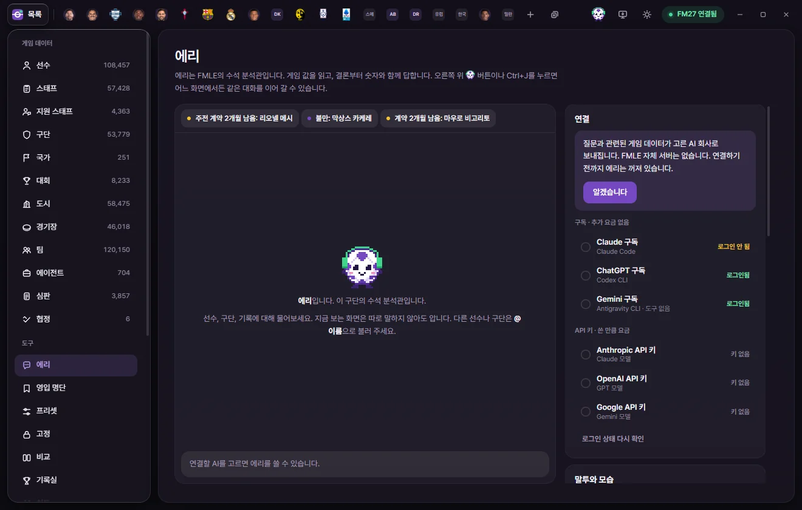
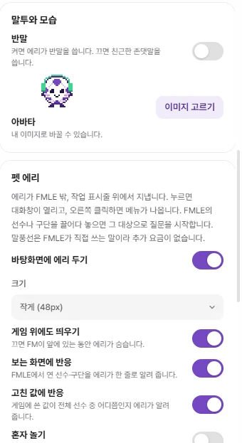

Tools
Eri
Eri is FMAX's built-in AI chief analyst—reading live game data, leading with clear conclusions backed by numbers, and bringing up action cards when you ask for changes. Connect directly with your Claude, ChatGPT, Gemini, or Grok subscription, an API key, or an OpenAI-compatible server (OpenRouter or local models).


Where to find Eri
Eri shows the same conversation in two places:
- Right panel: Click the Eri button at the top right of the window or press Ctrl+J to open the side panel from any screen. Click or press it again to close.
- Eri screen: Click 'Eri' under Tools on the left for a full chat view with connection, tone, desktop pet, and club policy note settings on the right. You can also jump here using the 'Full view and settings' button in the panel header.
Chat history is kept separately for each save. Opening a different save in FM switches to that save's chat, and switching AI connections continues the same conversation.

Connecting for the first time
Eri is turned off until you set up a connection. FMAX has no servers of its own—your questions go straight to the AI provider you choose.
- Open 'Eri' under Tools on the left.
- Read the notice on the 'Connection' card on the right and click Got it. It explains that game data relevant to your questions will be sent to the AI provider you pick.
- Choose one of the eight options below.
- For a subscription connection, click Install and connect (or Sign in if already installed) and sign in with your subscription account in the window and browser that open (Connecting with a subscription). For an API key connection, paste your key into the 'API key' field and click Save.
- Pick a Model and Reasoning level if needed.
| Connection | Subtitle | Cost |
|---|---|---|
| Claude subscription | Claude Code | No extra cost (counts toward your plan limit) |
| ChatGPT subscription | Codex CLI | No extra cost (counts toward your plan limit) |
| Gemini subscription | Antigravity CLI | No extra cost (counts toward your plan limit) |
| Grok subscription | Grok Build | No extra cost (counts toward your plan limit) |
| Anthropic API key | Claude models | Pay-as-you-go billed by the provider |
| OpenAI API key | GPT models | Pay-as-you-go billed by the provider |
| Google API key | Gemini models | Pay-as-you-go billed by the provider |
| Custom API | OpenAI-compatible API · OpenRouter, local models | Charged by that service (free for local models) |
Subscriptions run on the monthly plan you already pay for; if you hit a usage limit, you simply wait until the provider resets it. API keys draw from your prepaid credit balance with that provider as you go, and each reply shows its cost.
Connecting with a subscription
With a Subscription connection, FMAX runs Claude Code, Codex CLI, Antigravity CLI, or Grok Build installed on your PC once per question to get a reply. You sign in directly inside that tool—FMAX never touches your login credentials. Usage counts toward your subscription limit, and if you reach the cap, FMAX displays the provider's message as-is.
Each connection shows its current status on the right: 'Checking', 'Not installed', 'Not logged in', 'Logged in', or 'Installed'.
One-click install and sign-in: When the subscription you pick shows 'Not installed', you'll see Install and connect; when it shows 'Not logged in', you'll see Sign in.
- Clicking the button opens a terminal window (PowerShell). If the tool isn't on your PC yet, FMAX installs it first using the provider's official install command.
- Next, the sign-in flow starts and your browser opens. Sign in with your subscription account or confirm access. For Gemini (Antigravity), once an input prompt appears after signing in, type
/quitor close the window. - Meanwhile, the button changes to 'Waiting for sign-in'. FMAX checks every few seconds and automatically switches to that connection with a "Connected" notice once you're signed in (waiting up to 15 minutes).
If you don't see the window, check your taskbar. If you installed or signed in manually on your own, click Recheck sign-in status.
Update to latest: If the installed tool is out of date, it may lack options FMAX relies on and fail to reply, showing an outdated-version message in chat. Click Update to latest on the Connection card to re-run the provider's official installer; FMAX will let you know when it finishes.
ChatGPT subscription: Even if you haven't installed Codex CLI via npm, FMAX will use the bundled Codex inside ChatGPT's Codex desktop app if you have it installed. The model list only shows models your ChatGPT account and installed Codex version can actually use (varying by plan and version). If a previously chosen model is no longer in the list, FMAX falls back to 'Codex default model'. If you still see a message that the model isn't available on your account, pick a different model or click Update to latest.
When no reply comes back: If the tool is waiting for a browser sign-in, Eri lets you know and stops. It also stops if there is no response for 4 minutes. Run that tool directly once on your own to finish signing in and any first-run prompts, then ask again.
Gemini subscription connections cannot attach to FMAX tools. Instead, FMAX pre-reads data for your open screen and any players or clubs you mention with @ and bundles it into your question. FMAX tools such as Search criteria, league standings, Fixtures, and Action cards are unavailable, and you cannot attach images.
Grok subscription connections do use FMAX tools, though images cannot be sent. When FMAX runs Grok Build, it blocks access to local files and shell commands on your PC so it can only use FMAX tools.
Connecting with an API key
- API key: Stored exclusively in Windows Credential Manager. Only the last 4 characters appear on screen. Clicking Remove asks for confirmation and deletes the key for that connection.
- Monthly limit (USD): Starts at $10. Once your spending for the month reaches the limit, FMAX stops sending new questions—and if you hit it mid-reply, it stops right there. Set it to 0 for no limit. Below the field, you can see this month's total spend and reply count.
- Model: Each model name shows its price in USD per 1 million input and output tokens, with the recommended model at the top.
Charges are billed directly to your account with that provider. If a key is invalid or you're out of credits, the chat shows the exact reason returned by the provider.
Custom API (OpenRouter, local models)
Any server that speaks OpenAI's Chat Completions format works here—including routing services like OpenRouter and local model servers on your PC such as Ollama, LM Studio, or vLLM.
- Select Custom API under Connection.
- Enter the base URL up to (but not including)
/chat/completionsin API URL—for example,https://openrouter.ai/api/v1,http://localhost:11434/v1(Ollama), orhttp://localhost:1234/v1(LM Studio). - Enter the Model name, or click Load list to pick from the models reported by the server.
- Token pricing (USD per million tokens) is only used for your monthly limit and per-reply cost display. Leave it at 0 for local models.
- Click Save connection settings. If the server requires a key, enter it under 'API key (if needed)' below.
- For Eri to read live game data, the model must support tool calling (tools).
- Plain http URLs are restricted to this PC and your local home network. Use an https URL for servers on the internet.
- Keys are kept in Windows Credential Manager and sent only to the saved server URL. Changing the server URL clears the previously saved key.
Model and reasoning
- Model: On subscription connections, the top option uses that tool's own default—such as 'As set in Claude Code'.
- Reasoning: Choose from 'Model default', Low, Medium, or High (plus Extra high and Max on supported models). Higher settings think deeper at the cost of slower replies and higher plan usage or token charges. Models without reasoning steps hide this field.
Both the panel header and the bar under the input box show your active connection, model, reasoning level, and this month's spend ('No extra cost' on subscriptions).
Asking questions
- Type your question in the input box at the bottom.
- Press Enter or click the send button. Press Shift+Enter for a new line.
- While Eri works on an answer, you'll see live status updates such as 'Reading player info' or 'Filtering by criteria'. Click the square stop button to cancel at any time.
You don't need to explain what screen you're looking at. The screen label shown below the left side of the input box (for example, 'Lionel Messi · Stats') is automatically included with your question. On list screens, your search query, active filter count, and selected row count go along too.
Mention other players or clubs with @name. Type two or more characters after @ to bring up suggestions—up to 6 players and 3 clubs. Use the arrow keys to highlight one and press Enter or Tab to insert it, or Esc to close the popup.
Reading replies
- Eri leads with the conclusion first and backs it up with numbers. Ask for 'Details' (or more detail) if you want a longer breakdown.
- Player and club names in replies are clickable links that open their tabs.
- A Hidden values badge means the answer relies on numbers FM normally hides from the manager—Current Ability (CA), Potential Ability (PA), hidden attributes, or personality.
- For FM mechanics that can't be verified directly from your save data, Eri flags the answer as general FM knowledge.
- A small footer under each reply lists what Eri read (for example, 'Read: Player info, season records') along with tokens used and cost—or 'No extra cost' on subscriptions.
Subscription connections stop after 6 minutes with 'Stopped because it took too long'. On API key connections, if answering would take too many lookups, Eri wraps up with what it has found so far and asks you to narrow down the question.
What you can ask
Eri reads whatever it needs from FMAX and the live game automatically—no prompting required. Here are some examples:
| Topic | Examples |
|---|---|
| Player & club info | Attributes, contract, season stats, career history, squad |
| A player's recent matches | Date, opponent, minutes played, goals, assists and rating for each match, as far back as the game keeps them for each team the player played for (20 to 60 matches per team) |
| Finding & counting by criteria | "Players 21 or under with PA 170+", "Highest-CA ST on the transfer list" |
| Standings & upcoming transfers | League rankings and upcoming transfers already agreed in-game |
| Fixtures & results | Past results and upcoming fixtures across all competitions, scores (including extra time and penalties), stadiums, and attendance |
| Match rules | Squad registration size, minimum club-trained and home-grown players, foreign and non-EU limits, loan limits, matchday squad rules, and weekly wage caps. Age cutoffs and specific nationalities attached to rules cannot be read yet |
| Record | League record leaderboards from the Record room, plus club records |
| Tactics | Your tactics, plus formations other clubs have used or favor |
| Player interest | Filter down to players open to joining your club |
| Recommended signings | Positions your squad needs and targets to fill them (Recommendation cards) |
| How to use FMAX | Field names and where features live |
| Open screen | Say "show me" or "open": opens tabs, filtered lists, your Shortlist, or Compare right away |
Eri cannot read cup ties whose draw hasn't happened yet or matches from older seasons FM has moved into archive files. She also can't read a whole match's record at once (the list of a match's goalscorers, or every player's rating on both sides); a player's ratings and goals come one player at a time from "A player's recent matches" above.
Attaching images
You can send screenshots of the game or other images alongside your question.
- Click the paperclip button (Attach image) below the input box, paste into the input box (Ctrl+V), or drag and drop files onto it.
- Attach up to 4 images at a time in PNG, JPEG, WEBP, or GIF format. Large images are scaled down to fit within 2,000 pixels on their longest side before sending.
- Click ✕ on an attachment to remove it before sending. Sending an image without text asks Eri to take a look at the image.
- Only a small thumbnail stays in your chat history—the full image file isn't saved.
- Image attachments aren't supported on Gemini subscription or Grok subscription connections.
Alerts
Up to 6 alerts about your club appear above the chat. Because FMAX generates these directly by reading the game rather than calling an AI model, they cost nothing.
| Alert | When it appears |
|---|---|
| Starter contract: n mo. left / Contract: n mo. left | Players whose contracts expire within 6 months (starting XI players are marked as starters) |
| Transfer request | Players who have handed in a transfer request |
| Long-term injury | Injuries sidelined for up to 28 days or more |
| Unhappiness | Players among the top 18 in your squad who are unhappy |
Clicking an alert asks Eri about that situation (for example, asking whether to renew, sell, or line up a replacement), which uses your AI connection like any normal question.
Action cards
Eri never alters your game or FMAX on its own. Only when you ask it to make a change—"edit this", "add them", and so on—does it place an Action card below its reply. Nothing happens until you click Run on the card.
| Card type | What it does | Revert |
|---|---|---|
| Value edit | Writes values for players and other items the same way Save works on FMAX edit screens | Yes |
| Game editor | Actions from the ⚡ menu such as transfers, loans, and contract terminations | None |
| Live tweaks | Adds rules or flips toggles on the Live tweaks screen | Yes |
| Shortlist | Adds players to your FMAX Shortlist and optionally exports an .fmf file to your game folder | Yes (exported file stays) |
| Presets | Applies a saved preset to multiple targets | Yes (except any Game editor actions inside it) |
| Locks | Locks values to their current in-game numbers, or unlocks them | Yes |
| Bookmarks | Adds or removes items in Bookmarks | Yes |
| Saved filters | Saves search criteria as a saved filter | Yes |
| FMAX settings | Changes display currency, hiding CA/PA, or wage format | Yes |
| CSV | Saves a filtered list as a CSV file in your Downloads folder | None |
| Batch | Combines several of the actions above into a single card | Per step |
Action cards cannot change Eri's connection, API keys, or monthly limit—only you can change those.
Running and confirming cards
- Review what the card will change (target names and before → after values).
- Click Run, or click Discard if you don't want it.
When a card shows Check backup in its header, the button becomes Confirm and run and first asks 'Have you backed up your save?'. This applies to transfers, loans, and contract terminations, Value edits or Presets affecting more than 10 targets, Presets containing Game editor actions, and Live tweaks.
After running, the card updates to 'Completed', 'Partially run', or 'Failed to run' along with the count succeeded (such as 3/4). Any target that wasn't written shows the reason why:
| Reason | Meaning |
|---|---|
| Not written because the value changed in the meantime | The in-game value changed after the card was created |
| Not found in the game | That target no longer exists in the game |
| Invalid value | The value falls outside the allowed range |
| Couldn’t verify after writing | Values read back after writing didn’t match |
| Game isn’t running / No permission to write to the game | Check your FM27 connection or FMAX permissions |
Click Revert to undo a completed card. Reverting a Value edit leaves alone any target whose value changed again in the meantime, and reverting a Shortlist card leaves behind any .fmf file exported to your game folder.
Multi-step cards (Batch cards)
When you ask Eri to do several things at once, they're grouped into a single numbered Batch card.
- Steps that can't be undone are automatically moved to the end and marked 'No undo'.
- Clicking Run executes each step in order and stops if a step fails, leaving earlier completed steps in place. Each step shows 'Done', 'Stopped', or 'Undone' along with any stop reason.
- If a batch stops midway, click Run remaining steps to pick up from the step where it halted.
- Clicking Revert undoes completed steps in reverse order while leaving non-reversible steps untouched.
Eri action history
The 'Eri action history' card on the right side of the Eri screen lists up to the 30 most recent action cards you've run. Any reversible action can also be undone from here by clicking Revert.
Clicking a card inside Pet Eri's popup chat hands off to the main FMAX window so you can confirm and run it there.
Recommendation cards (signing targets)
Ask something like "Recommend signings for my squad" and Eri attaches a signing recommendation card below its reply. For your own club, recommendations are organized around the positions in your active tactic.
- The header shows the club, Transfer budget, and wage budget.
- Each position shows how many starters and backups you currently have, how many players passed the filters, and how many were excluded because their price wasn't known.
| Column | Meaning |
|---|---|
| Player | Name (click to open tab), club, age, and whether they're on the Transfer list |
| Ability | FMAX Ability score and tier for that position. Hover to see their projected score at full PA |
| Score | 0–100 signing score |
| Fee / wage | Transfer fee uses the player's Asking Price; wage is estimated at 1.2× their current Weekly wage |
| Likelihood | An FMAX-estimated 5–95 index—not a true probability and not calculated by the game |
Competition registration rules aren't factored in. Click Add n candidates to shortlist to add that position's targets to your Shortlist, or right-click any player's name for quick options like Shortlist, Bookmarks, and ⚡ Transfer.
Club policy notes
Give Eri standing recruitment and squad guidelines to follow when making recommendations and judgments (for example, 'Focus on signings aged 22 or under'). Notes apply only to the Current save.
- Type a rule under 'Club policy notes' on the right side of the Eri screen and click Add. Use Edit or Remove to update existing notes.
- If Eri suggests a policy note during a chat, a prompt appears below the conversation—click Add to notes or Discard.
- Whenever you ask Eri to do something that goes against your policy notes, Eri will point out the conflict before creating an action card.
Tone and appearance
- Character: Choose between Standard football (default) and Anime Eri, updating both Eri's icon inside FMAX and Pet Eri on your desktop. Anime Eri displays larger artwork on the Eri screen (in empty chats, beside replies, and next to the header) and answers with a livelier personality. Both characters follow the exact same rules for answering and using tools.
- Casual tone: Toggle between casual speech (on) and polite, formal speech (off), remembered separately per character. Standard football defaults to formal, while Anime Eri defaults to casual.
- Call me: How Eri addresses you (up to 12 characters), shared by both characters. If left blank, Standard football uses no title and Anime Eri calls you 'Boss'.
- Avatar: Click Choose image to use your own picture for whichever character is active, or Reset to default to restore the selected character's original look.
Pet Eri
Float Eri right above your taskbar outside the FMAX window by turning on Show Eri on desktop in the 'Pet Eri' card on the Eri screen.


| Setting | What it does |
|---|---|
| Size | Small (48px), Medium (72px), or Large (96px) |
| Show over game | When off, Eri hides whenever FM is in the foreground |
| React to open screens | Eri pops up a one-line speech bubble commenting on the player or club you open in FMAX |
| React to edits | Pops up a speech bubble showing where a value you wrote to the game ranks among all players |
| Play around | Rolling, bouncing, dozing off, watching your cursor (for Anime Eri: walking, waving, crawling, lying down to nap) |
| Stay when FMAX closes | Closing the FMAX window sends the app to your system tray while Eri stays on screen |
- Click Eri to open a compact chat window sharing the same conversation as the panel. Click the pin icon in its header for Always on top.
- Right-click menu: Open chat, Open FMAX, Character, Size, Play around, Hide for now, Quit FMAX.
- Drag Eri anywhere on screen; letting go drops Eri gently back onto the taskbar.
- While Pet Eri is active, drag any player or club row from an FMAX list—or any name link—onto Eri to start a question about them.
- Click Ask about this on an alert bubble or Ask Eri on a screen-reaction bubble to ask a follow-up right away.
- System tray icon menu: Open FMAX, Chat with Eri, Show Eri, Quit FMAX.
Speech bubbles are written locally by FMAX and cost nothing.
Deleting chat history
The 'Chat' card on the right side of the Eri screen shows how many messages are stored for the current save. Click Delete chat and confirm to clear all messages for this save while keeping your Club policy notes intact. Up to the 400 most recent messages are kept per save.
Privacy: what goes where
FMAX has no servers of its own. Data is only sent when you ask a question, directly to the provider behind your chosen connection.
Sent with every question
- Your question text and any Attached image
- Game date, save name, and your club's name
- Current screen context (tab name, target name, page, and—on lists—search query, filter count, and selected row count)
- Players and clubs mentioned with @, plus your display currency
- Club policy notes
- Last 6 chat messages (up to 280 characters each, including whether any Action card was run)
- System instructions for Eri's role and tone
Sent while answering: Game data Eri reads to answer your question (player attributes, standings, Fixtures, and so on) is passed to that provider's model. On a Gemini subscription connection, FMAX also pre-reads data for the open screen's target and any @-mentioned targets and includes it with your question.
Where it goes
| Connection | Destination |
|---|---|
| Anthropic API key | Anthropic (api.anthropic.com) |
| OpenAI API key | OpenAI (api.openai.com) |
| Google API key | Google (generativelanguage.googleapis.com) |
| Claude, ChatGPT, Gemini, or Grok subscription | Claude Code, Codex CLI, Antigravity CLI, or Grok Build on your PC sends it to that provider under your sign-in |
Subscription connections run inside an empty working folder with only FMAX tools enabled—the CLI's own tools (running commands, reading files, and so on) are turned off. FMAX tools listen strictly on your PC and only answer requests carrying a per-run key generated by FMAX.
Never sent anywhere: Club alerts above the chat and Pet Eri's speech bubbles are generated locally by FMAX and never leave your PC.
Stored on this PC
| Data | Where it lives |
|---|---|
| Chats, Club policy notes, Eri action history | eri folder inside the FMAX data folder, kept separately per save |
| This month's usage (tokens and cost) | eri folder inside the FMAX data folder |
| API keys | Windows Credential Manager |
| Connection, Model, Reasoning, Monthly limit, Casual tone, Call me, Avatar | Local FMAX storage on this PC (shared across all saves) |
| Character and Pet Eri settings | eri folder inside the FMAX data folder (pet.json) |
For attached images, only a small thumbnail is kept in the chat history.